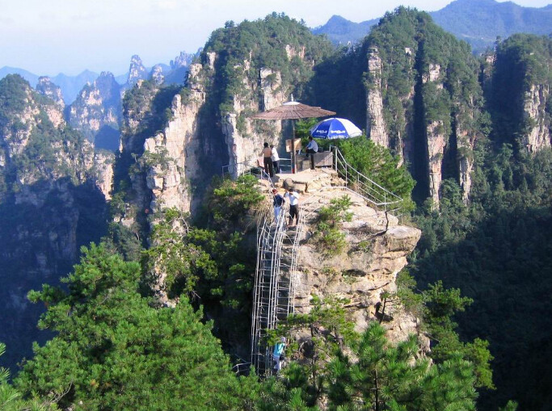

走进张家界
张家界是湖南省辖地级市，原名大庸市，辖2个市辖区（永定区、武陵源区）、2个县（慈利县、桑植县）。位于湖南西北部，澧水中上游，属武陵山区腹地。张家界因旅游建市，是中国最重要的旅游城市之一，是湘鄂渝黔革命根据地的发源地和中心区域。 1982年9月，张家界森林公园成为中国第一个国家森林公园。 1988年8月，张家界武陵源风景名胜区被列入国家重点风景名胜区；1992年，由张家界国家森林公园等三大景区构成的武陵源风景名胜区被联合国教科文组织列入《世界自然遗产名录》；2004年2月，被列入全球首批《世界地质公园》；2007年，被列入中国首批国家5A级景区。2017年12月24日，入选2017中国特色魅力城市200强。 2018年4月，湖南省张家界市以打造地域特色多民族民俗文化新名片项目入选第四批国家公共文化服务体系示范项目。
“界”在市域有两层含义：一是指领属界限，一是指高山。清代道光版《永定县志》载：“无事溪发源于张家界。”民国版《慈利县志》载：“索溪上源于张家界。”此处张家界，指的是今张家界国家森林公园一带。张家界之名，最早见于明崇祯四年（1631年）《张士族谱》序言。序言的作者叫张再昌，是永定卫大庸所指挥使张万聪的第6代孙。明弘治年间（1488-1506年），朝廷见张万聪镇守有功，将今张家界国家森林公园一带“山林之地”作为封地赏赐给他。他于是举家上山守业经营。明崇祯三年（1630年），张万聪的第6代孙张再弘被赐团官，且设衙署于此。这一带成为张氏世袭领地，被叫成了“张家界”。截止到20世纪末，张氏子孙在此已历17代，人口近千人。另一种说话是：相传西汉留侯张良当年在此隐居，终老后葬在水绕四门，因此很早的时候这里就叫张家界了。1958年，这里建立国营林场，因场址设在张家界农业社的地盘上，林场即取名张家界。1978年，张家界林场最早拉开湖南旅游开发的序幕。1982年，建立张家界国家森林公园，张姓聚居的张家界村由公园代管。鉴于张家界国家森林公园子海内外拥有很高的知名度和美誉度，1994年，经国务院批准，将大庸市更名为张家界市。
2016年，全市地区生产总值（GDP）497.6亿元，比上年增长8.1%。其中，第一产业增加值56.3亿元，增长3.6%；第二产业增加值106.8亿元，增长5.6%；第三产业增加值334.5亿元，增长9.8%。按常住人口计算，全市人均地区生产总值32598元（现价），同比增长7.7%。全市三次产业结构为11.3:21.5:67.2。工业增加值占地区生产总值的比重为17.6%。第一、二、三产业对经济增长的贡献率分别为5.1%、15.8%、79.1%。其中，工业对经济增长的贡献率为14.5%。按区县分，永定区地区生产总值202.9亿元，比上年增长8.4%；武陵源区地区生产总值50.8亿元，增长8.0%；慈利县地区生产总值167.1亿元，增长8.1%；桑植县地区生产总值82.2亿元，增长8.2%。